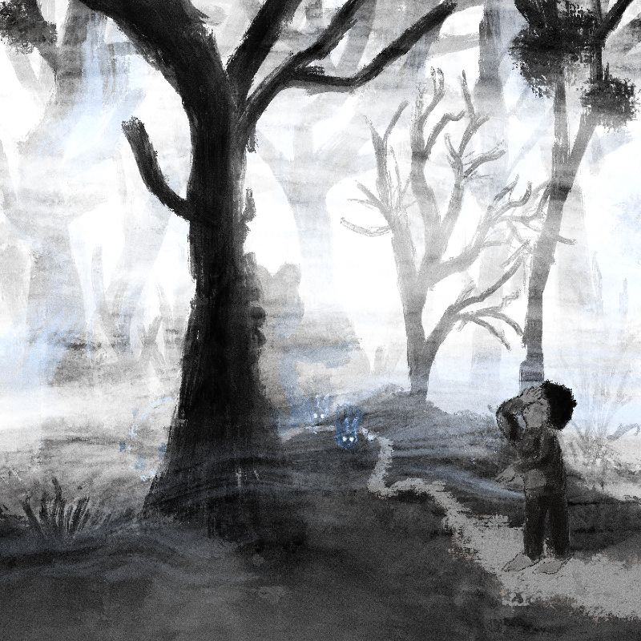

Creacover 2019 : J28
La musique du jour est Порою Сжатых Хлебов de Рабо́р.
Il s’agit d’une musique superbe, enchanteresse et envoûtante. Je connaissais déjà le groupe et je découvre ce titre. On y décèle tout de suite la « patte » de Рабо́р avec ce côté folklorique et balade en forêt de plantigrade.
Je perçois deux situations distinctes dans cette musique. Dans la première, des voix mystiques psalmodient une sorte d’incantation pour attirer les aventureux dans la forêt baignée d’un brouillard épais. Dans la seconde, ces égarés pénétrent dans une plaine éclairée où festoient les animaux, les êtres magiques et les plantes. Un ourson gratte une mandoline, une chouette souffle dans une flûte, des nymphes dansent, tous s’amusent.
J’ai représenté la première situation où les feux follets attirent l’innocent dans la forêt. La scène semble inquiétante, mais quand on sait ce qui l’attend ensuite, on ne peut qu’être content pour lui. Il va s’éclater !
